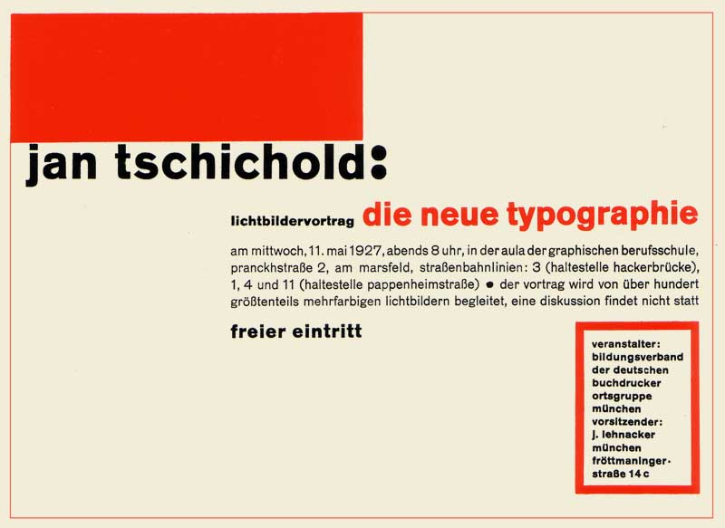
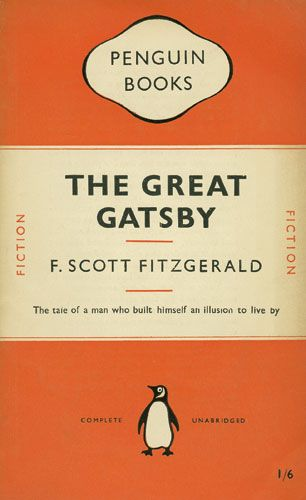
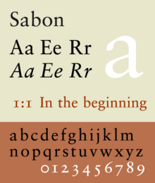

What impact did Jan Tschichold have on design in the 20th century?
Jan Tschichold who was born on the second of April 1902 in Leipzig, Germany, was a trained calligrapher, typographer and book designer. Jan claimed that he was'one of the most powerful influences of the 20th-century in typography'.Tschichold started calligraphy at a very young age, his father was a sign painter which may have been his influence to take an interest and begin designing.
His Life

Tschichold was raised in Germany, during his time here he worked closely with typographer Paul Renner who designed the font 'Futura'. Renner hired Tschichold three years prior to his book publication to teach typography at the Master School for German Printers, with this he began to find his style and started to create work that made a massive impact on design.
Furthermore, Tschichold fled to Switzerland during the rise of the Nazi party. During this time, Tschichold's typeface work was 'deemed a threat to the cultural heritage of Germany' as Tschichold reiterated the ‘new typography’ and ‘sans-serif’ typeface whereas traditionally this typography was made with blackletter. however, shortly after Tschichold released his different types of work it soon got destroyed for going against the traditional methods; shortly after this Tshichold made the decision to begin his own design in his own way so he then decided to flee the country. Tshichold advocated the use of ‘standardised paper’ for all printing matter and due to this, he was often referred to as ‘one of the most important representatives of the new typography’, From this moment on it was assured that Jan Tschichold would make an impact in design in the 20th century.
Tshichold’s calligraphic background training is what made him stand out during this time. The artist was dedicated to his work and it always stood out, as well as this most of the others had a background training in architecture or the fine arts whereas Tshichold wanted to stray away from the normal training. Due to Tschicholds experience in calligraphy, it may be the reason he never used or worked with handmade papers and costume fonts; many typographers used this method, so it allowed Tschichold to be different and make his work stand out and get attention, Tshichold claimed to prefer to use stock fonts or commercial paper stock as he felt he could work better using these tools.
Jan Tschichold played a significant role in the 20th century in the development of graphic design, he changed the way people saw typography and he made a large impact on all printers and designers in today’s society and his work is still admired. Tshichold died on the eleventh of August 1974.
His Work
Jan Tschichold created a lot of work that is still admired, he had a large impact on the way printers think and create work. Although he was well known for his calligraphy and typeface, Tshcichold was also a talented book designer, due to this he is a very influential designer and can often be referred to by young designers.
Die Neue Typographie
After visiting the Bauhaus exhibition in 1923, Tshichold was an advocate for modern design and he decided to hold an exhibition showing his take on modernist design. Tshichold created the book ‘DIE NEUE TYPOGRAPHIE’ which he published in 1928, the book was known as the ‘manifesto of design’ and had a large impact on the arts. Tshichold favoured ‘non-centre’ design, his book entailed various different takes of modernist design that he created. Furthermore, the book is said to embrace extremes and define modernist typographic ideas, he used the book to capture all of those ideas and have them in one place. Tschichold condemned the use of ‘sans-serif’ type, from the book it’s clear that Jan Tschichold applied the knowledge and the experience he received from visiting Gropius’ Bauhaus Art School in the 1923 exhibition to his own designs and creations. It can be seen that Tschichold was influenced from the modernist design seen in Bauhaus as he applied it to his work that can be seen in the book ‘DIE NEUE TYPOGRAPHIE’, not only was he influenced by Bauhaus; he seemed to take interest in the Russian constructivists and it can be seen that some of his work is influenced by this. Finally, from this point onwards Jan Tschichold declared his own quote which made a large impact on young designers today.
‘Type should be elementary forms without embellishment’-Jan Tshichold
Penguin books
Jan Tschichold is remembered for many things, another piece of work that Jan created was the ‘Penguin Books’. ‘Penguin’ was founded by Allen Lane, the books became extremely popular however Lane set out to find a new designer after wanting a change in the look. During the late 1940’s Lane found Jan Tschichold and immediately made him the new designer for Penguin books. Although Tschichold made subtle changes, it had made a huge impact on the book making it a very popular seller.
Tschichold created some guidelines called ‘Penguin Composition Rules’, these guidelines included the design technique for all the different pages of the books and it also included the typography of penguin books; these guidelines ensured to include the details to give it the modernist design that Tschichold was aiming for.
The designer had a few goals for the look he created for the Penguin books, he claimed he wanted to ‘implement a constant look and feel across all of the Penguin books, no matter the print foundry’. As a result of this mindset, the books cover changed slightly. The Penguin books started off with a mix of ‘Gill-sans’ for the entire text, Tschichold decided to simplify the design by paying attention to the tracking of the text, he never wanted to lose the old text but to simplify it and make it more modern. The Penguin books now include the same use of Eric Gills ‘Gill-San’ typeface, as well as this he used other typefaces including Monotype Bembo, Monotype Centaur and finally Perpetua typeface.
The Penguin books are one of the main things that Jan Tschichold is remembered for in Britain, these refashioned designs gave him a boost in his career as a typographer and designer. The books are famous for their horizontally banded covers, using colours to portray different sections of the book such as orange for fiction, green for crime and finally blue for the bibliography, he created the development of over 500 penguin books between the year 1947 and 1949.
His Typeface
Furthermore, another creation that Jan Tschichold is remembered for is his ‘universal alphabet’ that he created throughout the years of 1926 and 1929. His intentions with the new alphabet were to change the spelling in the German language by replacing some ‘EU’ letters with ‘oi’. Tshichold claimed to do this as he ‘wanted to clean up on a few multigraphs and non-phonetic spellings in the German language’. In order to complete this new alphabet, the German language was introduced to some small and simple changed to make it easier, for example, long vowels were specified with a ‘macron’ below them and the ‘umlaut’ still above it. Shortly after the creation of this new alphabet, Jan Tshichold wanted it to be presented in a Sans-Serif typeface and without capital letters.
However, this wasn’t the end for Tshichold’s typeface career shortly after this he began to create many more typefaces that are still used today. Throughout the years Tschichold designed typefaces such as: ‘Transit’ which he created in 1931, ‘Saskia’ which he designed in 1931 to 1932, ‘Zeus’ which was designed in 1931, ‘Uhertype-standard-grotesque' which Tschichold designed for an early phototypesetting machine in 1931 and finally one of the most popular typefaces ‘Sabon’ which is still known and used today which was created during the years of 1966 and 1967.
| 1931 | 1932 | 1966 |
|---|---|---|
| Standard-grotesque | Saskia | sabon |
| Transit | ||
| Zeus |
The typeface ‘Sabon’ was one of the most popular designs by Jan Tshichold and has been recognised throughout the years. The typeface was produced alongside the Monotype and the Linotype fonts and grew its popularity for its style. Sabon is described as an ‘old-style serif typeface’ which made it a font that can be used in many different forms, Tshichold wanted this old-style font as it was based on the typeface designer Claude Garamond. Due to this, the font was referred to as the Garamond revival due to its similarity; Sabons growth in popularity made it one of the most used typefaces for business requirements.